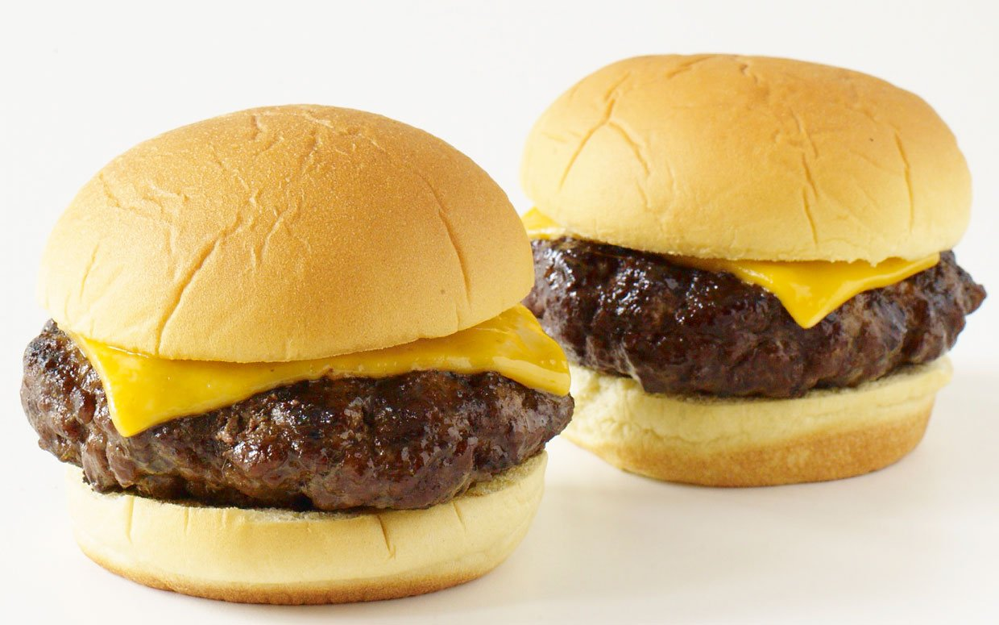

Cheeseburger

Description
A quick and simple recipe that is sure to hit the spot every time.
Its meat, cheese, and bread. What more could you want?
Ingredients:
- ground beef
- sliced american cheese
- hamburger buns
- seasonings:
- seasoning salt
- onion powder
- garlic powder
- pepper
- condiments:
- ketchup
- mayonaise
- mustard
Steps:
- Season your ground beef.
- Roll the beef into a ball. (The larger the ball, the larger the patty.
- Flatten the balls into patties and put a small hole through the center.
- Place patties on hot pan and cook on each side for 5 minutes.
- When there is one minute left on second side, place cheese on top to melt.
- Place burgers on buns, decorate with condiments of your choice, and serve!
Home